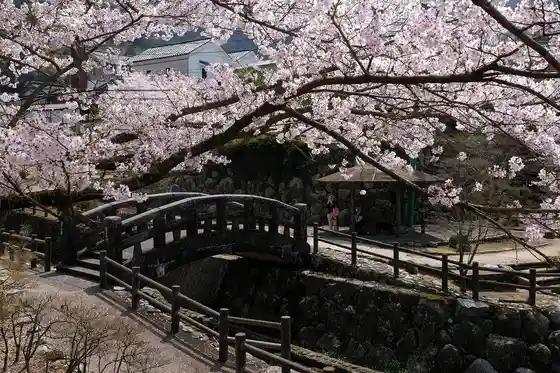
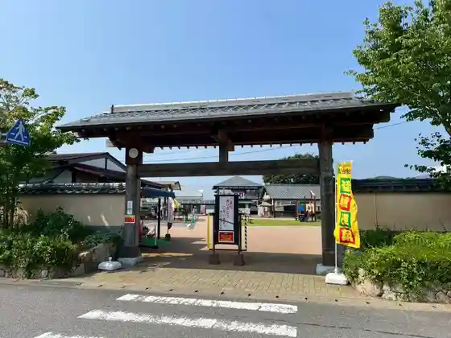
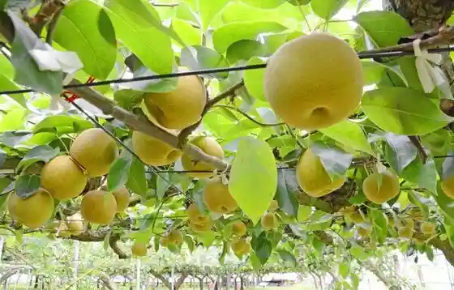
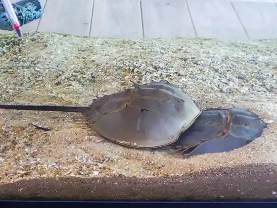

Hi Kama Village Okawa Uchiyama
Imari, Saga · 0955-23-3479 · Official / source link

Roadside Station Imari (Imari Furusato Mura)
Imari, Saga · 0955-24-2252 · Official / source link

Tourist Farm Furutsu Kari (Namba Ta Kanko Nogyo Suishinkyogikai)
Imari, Saga · 0955-24-2252 · Official / source link

Imari Wan Kabutogani no Kan
Imari, Saga · 070-4095-3597 · Official / source link

Matsura Ichi Shuzo
Imari, Saga · 0955-28-0123 · Official / source link
Nabeshima Han Kama Hashi
Imari, Saga · 0955-23-7293 · Official / source link
SEIZAN+
Imari, Saga · 0955-23-2366 · Official / source link
Imari Shrine
Imari, Saga · 0955-23-2093 · Official / source link
Ura no Saki Eki Sakura no Tonneru
Imari, Saga · 0956-25-2229 · Official / source link
Etowaru Horie Main Shop
Imari, Saga · 0955-23-1515 · Official / source link
Imari Tourism Association
Imari, Saga · 0955-23-3479 · Official / source link
Aioi Hashi Enmei Hashi Saiwaibashi
Imari, Saga · 0955-23-3479 · Official / source link
Nabeshima Tora Sen Kama
Imari, Saga · 0955-22-3095 · Official / source link
Kusuki no Mori
Imari, Saga · 0955-24-9033 · Official / source link
Hatake Man to En
Imari, Saga · 0955-23-2784 · Official / source link
Matsuratetsudo Imari Eki
Imari, Saga · 0955-22-3551 · Official / source link
Imari Arida Yaki Dento Sangyo Hall
Imari, Saga · 0955-22-6333 · Official / source link
Meotoshi no to
Imari, Saga · 0955-23-7293 · Official / source link
Nakajima Shrine
Imari, Saga · 0955-23-2093 · Official / source link
Imari Nabeshima Gyararii
Imari, Saga · 0955-22-2267 · Official / source link
Myojo Sakura
Imari, Saga · Official / source link
Imari Toki Shoka Museum (Maru Koma)
Imari, Saga · 0955-22-7934 · Official / source link
Umi no Shirukurodo Kan
Imari, Saga · 0955-23-1189 · Official / source link